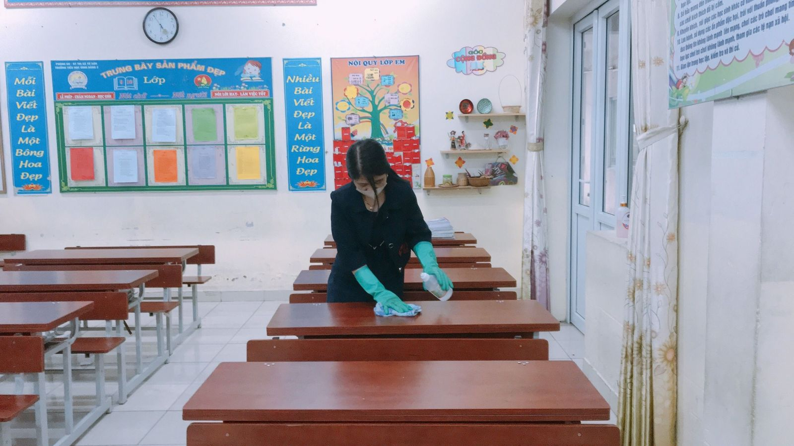
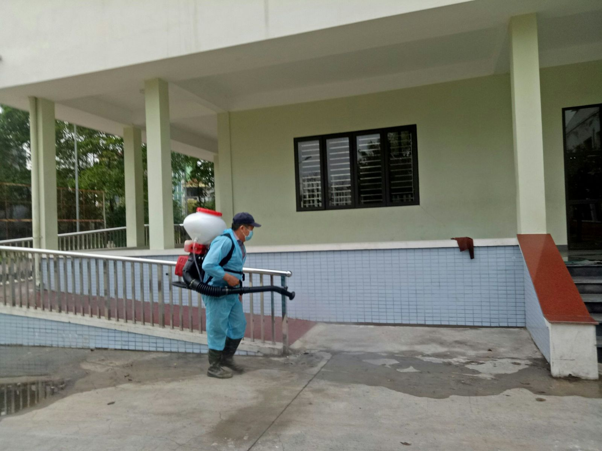
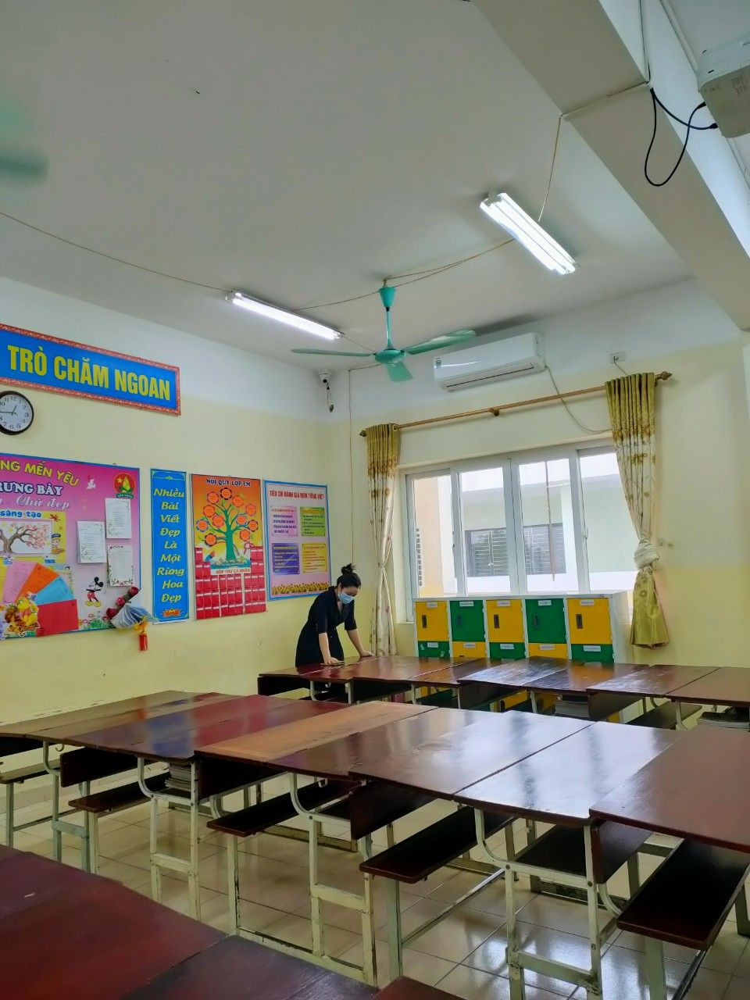
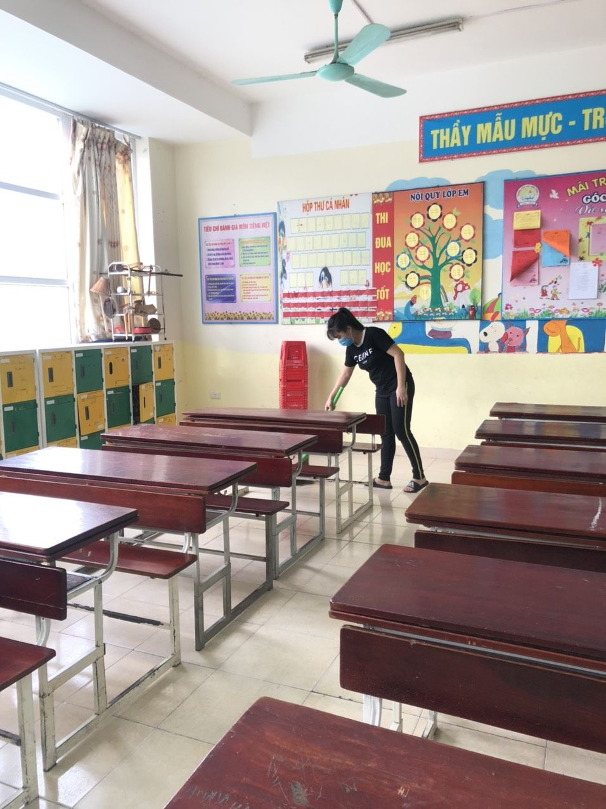
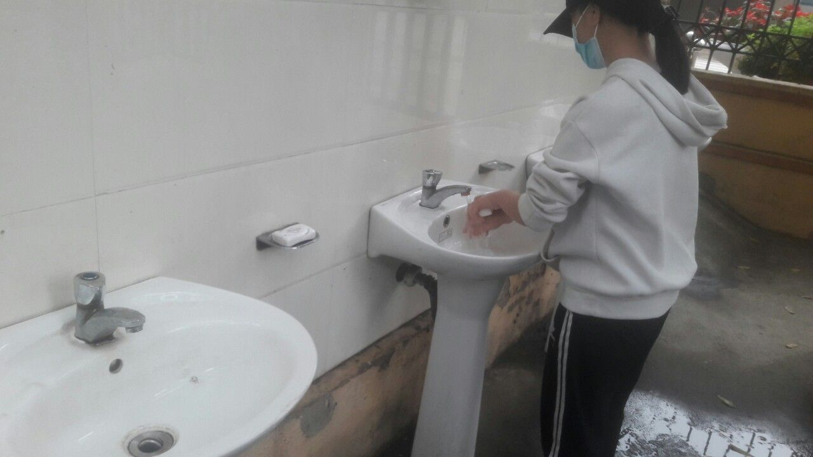
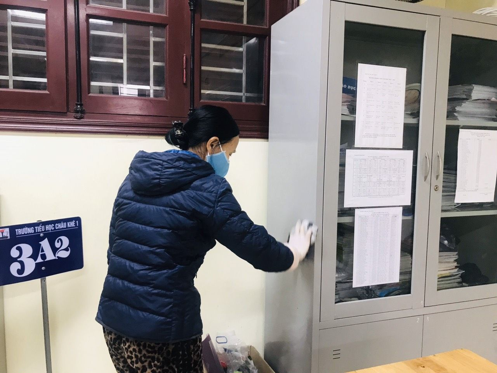
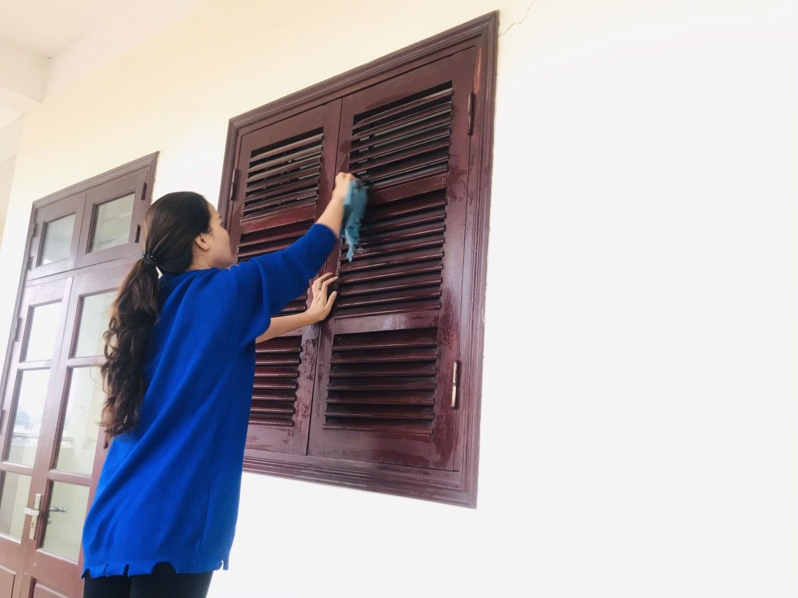
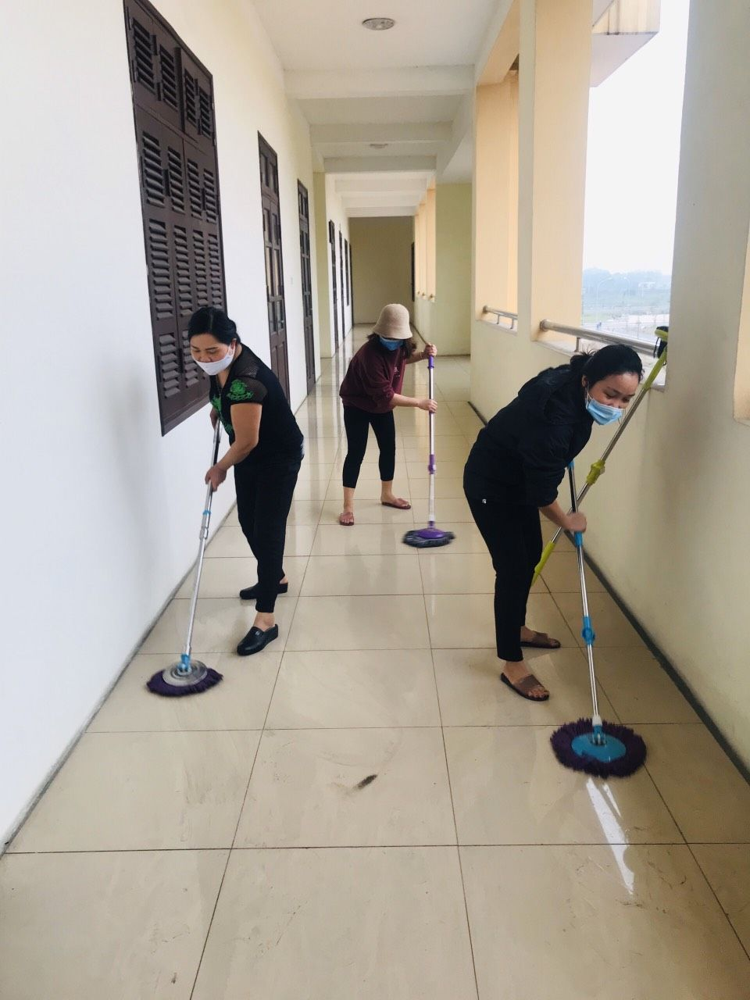
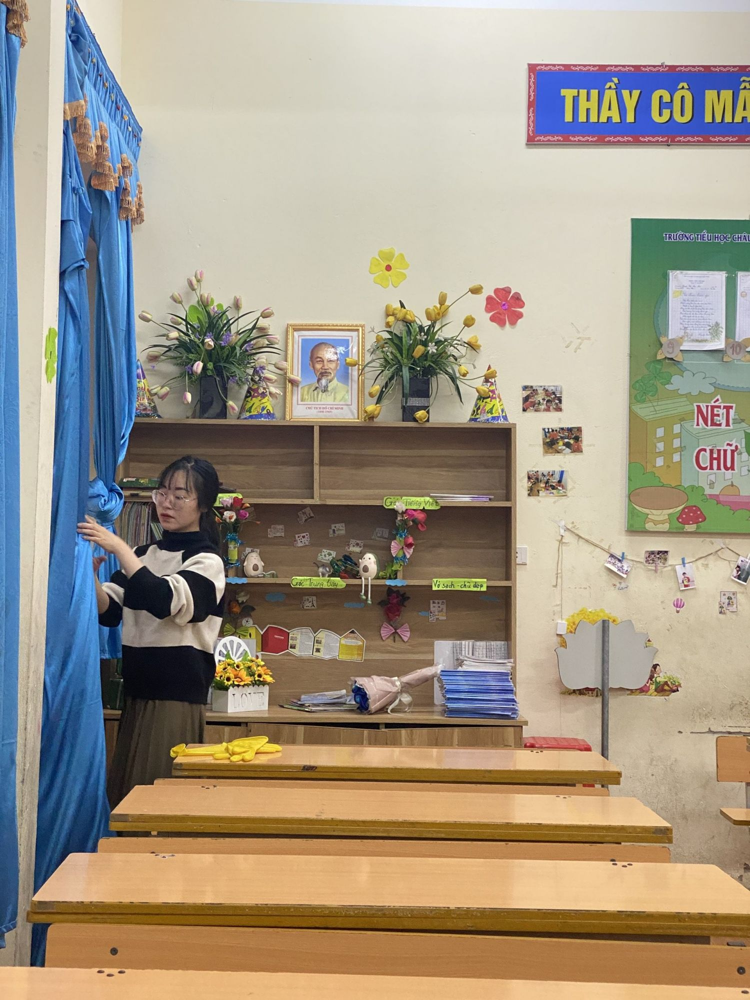

Từ Sơn: Chuẩn bị các điều kiện sẵn sàng đón học sinh trở lại trường
Theo chỉ đạo mới nhất từ Sở GD&ĐT Bắc Ninh, các trường học trên địa bàn Bắc Ninh cần chuẩn bị tối đa các điều kiện để đón học sinh quay trở lại trường học, vừa đảm bảo chương trình học tập cũng như nguyên tắc phòng dịch trong tình hình mới.
Ngày 25/2, Phó Giám đốc phụ trách Sở GD&ĐT Bắc Ninh đã ký ban hành văn bản chỉ đạo các cơ sở giáo dục trực thuộc về việc chuẩn bị các điều kiện đảm bảo an toàn khi đón học sinh trở lại trường học trong điều kiện bình thường mới.
Theo đó, Sở GD&ĐT Bắc Ninh yêu cầu các cơ sở giáo dục phối hợp với cơ quan y tế địa phương và phụ huynh học sinh tổ chức vệ sinh, khử khuẩn trường, lớp học; đảm bảo cơ sở vật chất, trang thiết bị y tế như: hệ thống cấp nước sạch, xà phòng, nước sát khuẩn tay, khẩu trang và nhiệt kế điện tử đo thân nhiệt khi cán bộ giáo viên và học sinh khi trở lại trường học. Các trường học hoàn thành công tác này trước ngày 1/3/2021.
Trước khi học sinh đến trường, gia đình kiểm tra thân nhiệt cho trẻ mầm non, học sinh phổ thông; học viên, giáo viên, cán bộ, nhân viên nhà trường tự đo thân nhiệt. Thực hiện nghiêm việc đeo khẩu trang từ nhà đến trường, từ trường về nhà và khi ở nơi công cộng.
Học sinh khi đang trong thời gian cách ly theo yêu cầu của cơ quan y tế không được đến trường. Nếu học sinh, giáo viên, cán bộ, nhân viên nhà trường có biểu hiện sốt, ho, khó thở thì phải nghỉ ở nhà, thông tin ngay cho nhà trường, đồng thời đưa đến cơ sở y tế để được khám, tư vấn, điều trị.
Thực hiện việc đo thân nhiệt cho học sinh, giáo viên, cán bộ quản lý và nhân viên trước khi vào trường và lớp học. Thực hiện đeo khẩu trang đúng cách; thường xuyên rửa tay bằng xà phòng; không dùng chung các đồ dùng cá nhân; bỏ rác đúng nơi quy định; kịp thời báo cáo lãnh đạo nhà trường nếu phát hiện có học sinh, giáo viên, cán bộ, nhân viên nhà trường có biểu hiện không bình thường về sức khỏe để có biện pháp xử lý.
Tổ chức lau khử khuẩn, vệ sinh các bề mặt thường xuyên tiếp xúc, khu vực rửa tay, nhà vệ sinh, cầu thang, phương tiện đưa đón học sinh theo quy định.
Bên cạnh đó, Sở GD&ĐT Bắc Ninh yêu cầu các nhà trường tổ chức ôn tập kiến thức cũ, dạy kiến thức mới theo chương trình kế hoạch giáo dục nhà trường ngay khi học sinh đi học trở lại; hoàn thành chương trình các môn học theo thời gian quy định của Bộ GD&ĐT. Các nhà trường cần tăng cường quản lý, chỉ đạo để nâng cao chất lượng dạy học; tiếp tục đẩy mạnh đổi mới phương pháp dạy học, quan tâm tới các học sinh có học lực yếu; hướng dẫn học sinh tự học, tự ôn tập.
Đối với các trường mầm non, yêu cầu rà soát các điều kiện tổ chức hoạt động, xây dựng phương án bảo đảm an toàn phòng, chống dịch bệnh trước khi trẻ đi học trở lại; phổ biến, thống nhất đến cán bộ, giáo viên, nhân viên và cha mẹ học sinh nắm vững để cùng thực hiện.
